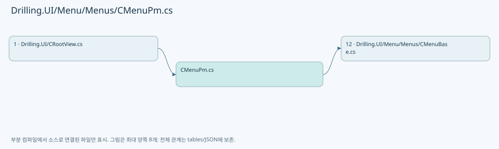

Markdown 원문 · Git 원본
Drilling.UI/Menu/Menus/CMenuPm.cs
| 항목 | 내용 |
|---|
| 원본 저장소 | https://github.com/kjuws10-rgb/A3Drilling.git |
| 원본 Commit | 5aee8e58439c9b455cae7c9593c9be986c3e682e |
| 원본 SHA256 | 485dc2492d90c8008cf87f55f9e58a9f4c93d89eb4080f09205a4bab2a9e66b1 |
| 파일 분류 | code |
| 원본 크기/행 | 2,116 bytes / 52 physical lines |
| 인코딩 | utf-8-sig |
| 검토 범위 | 구문/부분 의미 분석에서 추출한 사실. 동작·물리 단위·실장비 합격을 보증하지 않습니다. |
| 원본 링크 | 고정 Commit 원본 |
파일의 역할과 읽는 순서
WPF 화면·사용자 명령·표시 상태를 구성합니다. XAML 이벤트와 코드 비하인드, RootView의 조립 경로를 함께 추적합니다.

네임스페이스·타입·상속
| 타입 | 구분 | 원본 범위 | 선언/상속 |
|---|
| CMenuPm | ClassDeclaration | 9–52 | CMenuPm: CMenuBase |
멤버 빠른 목록
| 이름 | 종류 | 범위 | 서명 |
|---|
| Menu | PropertyDeclaration | L11–17 | Drilling.UI.Menu.Menus.EN_MENU Drilling.UI.Menu.Menus.CMenuPm.Menu |
| get_Menu | GetAccessorDeclaration | L13–16 | Drilling.UI.Menu.Menus.EN_MENU Drilling.UI.Menu.Menus.CMenuPm.Menu.get |
| StartTime | PropertyDeclaration | L19–19 | string Drilling.UI.Menu.Menus.CMenuPm.StartTime |
| get_StartTime | GetAccessorDeclaration | L19–19 | string Drilling.UI.Menu.Menus.CMenuPm.StartTime.get |
| set_StartTime | SetAccessorDeclaration | L19–19 | void Drilling.UI.Menu.Menus.CMenuPm.StartTime.set |
| LockItems | PropertyDeclaration | L20–20 | System.Collections.Generic.IReadOnlyList<Drilling.UI.Menu.Menus.ST_DISPLAY_ITEM> Drilling.UI.Menu.Menus.CMenuPm.LockItems |
| get_LockItems | GetAccessorDeclaration | L20–20 | System.Collections.Generic.IReadOnlyList<Drilling.UI.Menu.Menus.ST_DISPLAY_ITEM> Drilling.UI.Menu.Menus.CMenuPm.LockItems.get |
| set_LockItems | SetAccessorDeclaration | L20–20 | void Drilling.UI.Menu.Menus.CMenuPm.LockItems.set |
| BlockedItems | PropertyDeclaration | L21–21 | System.Collections.Generic.IReadOnlyList<Drilling.UI.Menu.Menus.ST_DISPLAY_ITEM> Drilling.UI.Menu.Menus.CMenuPm.BlockedItems |
| get_BlockedItems | GetAccessorDeclaration | L21–21 | System.Collections.Generic.IReadOnlyList<Drilling.UI.Menu.Menus.ST_DISPLAY_ITEM> Drilling.UI.Menu.Menus.CMenuPm.BlockedItems.get |
| set_BlockedItems | SetAccessorDeclaration | L21–21 | void Drilling.UI.Menu.Menus.CMenuPm.BlockedItems.set |
| Build | MethodDeclaration | L23–44 | System.Threading.Tasks.Task<Drilling.UI.Menu.Menus.CScreenViewModel> Drilling.UI.Menu.Menus.CMenuPm.Build(System.Threading.CancellationToken) |
| Apply | MethodDeclaration | L46–51 | void Drilling.UI.Menu.Menus.CMenuPm.Apply(string, System.Collections.Generic.IReadOnlyList<Drilling.UI.Menu.Menus.ST_DISPLAY_ITEM>, System.Collections.Generic.IReadOnlyList<Drilling.UI.Menu.Menus.ST_DISPLAY_ITEM>) |
멤버별 상세 계약·호출·처리 해설
PropertyDeclaration Menu · L11–17
Drilling.UI/Menu/Menus/CMenuPm.cs:11–17
| 항목 | 실제 추출 값 |
|---|
| 서명 | Drilling.UI.Menu.Menus.EN_MENU Drilling.UI.Menu.Menus.CMenuPm.Menu |
| 접근/수식자 | Public / public, override |
| 반환/값 타입 | Drilling.UI.Menu.Menus.EN_MENU |
| 소속 타입 | NamedType:Drilling.UI.Menu.Menus.CMenuPm |
현재 부분 분석에서 직접 연결된 호출자는 없습니다. XAML/이벤트/인터페이스·델리게이트·외부 진입을 추가 확인해야 하며, 미사용으로 판정한 것이 아닙니다.
변경 전 점검: 입력/반환 타입, 위 호출자, 예외/취소 경로, 공유 상태와 저장·전송 소비자를 함께 확인합니다. 값의 단위나 물리 방향을 이름만으로 확정하지 않습니다.
GetAccessorDeclaration get_Menu · L13–16
Drilling.UI/Menu/Menus/CMenuPm.cs:13–16
| 항목 | 실제 추출 값 |
|---|
| 서명 | Drilling.UI.Menu.Menus.EN_MENU Drilling.UI.Menu.Menus.CMenuPm.Menu.get |
| 접근/수식자 | Public / get |
| 반환/값 타입 | Drilling.UI.Menu.Menus.EN_MENU |
| 소속 타입 | NamedType:Drilling.UI.Menu.Menus.CMenuPm |
현재 부분 분석에서 직접 연결된 호출자는 없습니다. XAML/이벤트/인터페이스·델리게이트·외부 진입을 추가 확인해야 하며, 미사용으로 판정한 것이 아닙니다.
본문의 실제 연산·분기·예외·반환 순서(원문 위치 순):
| 원본 행 | 종류 | 주석 해설 |
|---|
| 15 | return | 호출자에게 값 또는 제어를 반환합니다: return EN_MENU.Pm; |
변경 전 점검: 입력/반환 타입, 위 호출자, 예외/취소 경로, 공유 상태와 저장·전송 소비자를 함께 확인합니다. 값의 단위나 물리 방향을 이름만으로 확정하지 않습니다.
PropertyDeclaration StartTime · L19–19
Drilling.UI/Menu/Menus/CMenuPm.cs:19–19
| 항목 | 실제 추출 값 |
|---|
| 서명 | string Drilling.UI.Menu.Menus.CMenuPm.StartTime |
| 접근/수식자 | Public / public |
| 반환/값 타입 | string |
| 소속 타입 | NamedType:Drilling.UI.Menu.Menus.CMenuPm |
현재 부분 분석에서 직접 연결된 호출자는 없습니다. XAML/이벤트/인터페이스·델리게이트·외부 진입을 추가 확인해야 하며, 미사용으로 판정한 것이 아닙니다.
변경 전 점검: 입력/반환 타입, 위 호출자, 예외/취소 경로, 공유 상태와 저장·전송 소비자를 함께 확인합니다. 값의 단위나 물리 방향을 이름만으로 확정하지 않습니다.
GetAccessorDeclaration get_StartTime · L19–19
Drilling.UI/Menu/Menus/CMenuPm.cs:19–19
| 항목 | 실제 추출 값 |
|---|
| 서명 | string Drilling.UI.Menu.Menus.CMenuPm.StartTime.get |
| 접근/수식자 | Public / get |
| 반환/값 타입 | string |
| 소속 타입 | NamedType:Drilling.UI.Menu.Menus.CMenuPm |
현재 부분 분석에서 직접 연결된 호출자는 없습니다. XAML/이벤트/인터페이스·델리게이트·외부 진입을 추가 확인해야 하며, 미사용으로 판정한 것이 아닙니다.
변경 전 점검: 입력/반환 타입, 위 호출자, 예외/취소 경로, 공유 상태와 저장·전송 소비자를 함께 확인합니다. 값의 단위나 물리 방향을 이름만으로 확정하지 않습니다.
SetAccessorDeclaration set_StartTime · L19–19
Drilling.UI/Menu/Menus/CMenuPm.cs:19–19
| 항목 | 실제 추출 값 |
|---|
| 서명 | void Drilling.UI.Menu.Menus.CMenuPm.StartTime.set |
| 접근/수식자 | Private / private, set |
| 반환/값 타입 | void |
| 소속 타입 | NamedType:Drilling.UI.Menu.Menus.CMenuPm |
입력 계약:
| 이름 | 타입 | 전달 | 선택/기본값 |
|---|
| value | string | None | False / |
현재 부분 분석에서 직접 연결된 호출자는 없습니다. XAML/이벤트/인터페이스·델리게이트·외부 진입을 추가 확인해야 하며, 미사용으로 판정한 것이 아닙니다.
변경 전 점검: 입력/반환 타입, 위 호출자, 예외/취소 경로, 공유 상태와 저장·전송 소비자를 함께 확인합니다. 값의 단위나 물리 방향을 이름만으로 확정하지 않습니다.
PropertyDeclaration LockItems · L20–20
Drilling.UI/Menu/Menus/CMenuPm.cs:20–20
| 항목 | 실제 추출 값 |
|---|
| 서명 | System.Collections.Generic.IReadOnlyList<Drilling.UI.Menu.Menus.ST_DISPLAY_ITEM> Drilling.UI.Menu.Menus.CMenuPm.LockItems |
| 접근/수식자 | Public / public |
| 반환/값 타입 | System.Collections.Generic.IReadOnlyList<Drilling.UI.Menu.Menus.ST_DISPLAY_ITEM> |
| 소속 타입 | NamedType:Drilling.UI.Menu.Menus.CMenuPm |
현재 부분 분석에서 직접 연결된 호출자는 없습니다. XAML/이벤트/인터페이스·델리게이트·외부 진입을 추가 확인해야 하며, 미사용으로 판정한 것이 아닙니다.
변경 전 점검: 입력/반환 타입, 위 호출자, 예외/취소 경로, 공유 상태와 저장·전송 소비자를 함께 확인합니다. 값의 단위나 물리 방향을 이름만으로 확정하지 않습니다.
GetAccessorDeclaration get_LockItems · L20–20
Drilling.UI/Menu/Menus/CMenuPm.cs:20–20
| 항목 | 실제 추출 값 |
|---|
| 서명 | System.Collections.Generic.IReadOnlyList<Drilling.UI.Menu.Menus.ST_DISPLAY_ITEM> Drilling.UI.Menu.Menus.CMenuPm.LockItems.get |
| 접근/수식자 | Public / get |
| 반환/값 타입 | System.Collections.Generic.IReadOnlyList<Drilling.UI.Menu.Menus.ST_DISPLAY_ITEM> |
| 소속 타입 | NamedType:Drilling.UI.Menu.Menus.CMenuPm |
현재 부분 분석에서 직접 연결된 호출자는 없습니다. XAML/이벤트/인터페이스·델리게이트·외부 진입을 추가 확인해야 하며, 미사용으로 판정한 것이 아닙니다.
변경 전 점검: 입력/반환 타입, 위 호출자, 예외/취소 경로, 공유 상태와 저장·전송 소비자를 함께 확인합니다. 값의 단위나 물리 방향을 이름만으로 확정하지 않습니다.
SetAccessorDeclaration set_LockItems · L20–20
Drilling.UI/Menu/Menus/CMenuPm.cs:20–20
| 항목 | 실제 추출 값 |
|---|
| 서명 | void Drilling.UI.Menu.Menus.CMenuPm.LockItems.set |
| 접근/수식자 | Private / private, set |
| 반환/값 타입 | void |
| 소속 타입 | NamedType:Drilling.UI.Menu.Menus.CMenuPm |
입력 계약:
| 이름 | 타입 | 전달 | 선택/기본값 |
|---|
| value | System.Collections.Generic.IReadOnlyList<Drilling.UI.Menu.Menus.ST_DISPLAY_ITEM> | None | False / |
현재 부분 분석에서 직접 연결된 호출자는 없습니다. XAML/이벤트/인터페이스·델리게이트·외부 진입을 추가 확인해야 하며, 미사용으로 판정한 것이 아닙니다.
변경 전 점검: 입력/반환 타입, 위 호출자, 예외/취소 경로, 공유 상태와 저장·전송 소비자를 함께 확인합니다. 값의 단위나 물리 방향을 이름만으로 확정하지 않습니다.
PropertyDeclaration BlockedItems · L21–21
Drilling.UI/Menu/Menus/CMenuPm.cs:21–21
| 항목 | 실제 추출 값 |
|---|
| 서명 | System.Collections.Generic.IReadOnlyList<Drilling.UI.Menu.Menus.ST_DISPLAY_ITEM> Drilling.UI.Menu.Menus.CMenuPm.BlockedItems |
| 접근/수식자 | Public / public |
| 반환/값 타입 | System.Collections.Generic.IReadOnlyList<Drilling.UI.Menu.Menus.ST_DISPLAY_ITEM> |
| 소속 타입 | NamedType:Drilling.UI.Menu.Menus.CMenuPm |
현재 부분 분석에서 직접 연결된 호출자는 없습니다. XAML/이벤트/인터페이스·델리게이트·외부 진입을 추가 확인해야 하며, 미사용으로 판정한 것이 아닙니다.
변경 전 점검: 입력/반환 타입, 위 호출자, 예외/취소 경로, 공유 상태와 저장·전송 소비자를 함께 확인합니다. 값의 단위나 물리 방향을 이름만으로 확정하지 않습니다.
GetAccessorDeclaration get_BlockedItems · L21–21
Drilling.UI/Menu/Menus/CMenuPm.cs:21–21
| 항목 | 실제 추출 값 |
|---|
| 서명 | System.Collections.Generic.IReadOnlyList<Drilling.UI.Menu.Menus.ST_DISPLAY_ITEM> Drilling.UI.Menu.Menus.CMenuPm.BlockedItems.get |
| 접근/수식자 | Public / get |
| 반환/값 타입 | System.Collections.Generic.IReadOnlyList<Drilling.UI.Menu.Menus.ST_DISPLAY_ITEM> |
| 소속 타입 | NamedType:Drilling.UI.Menu.Menus.CMenuPm |
현재 부분 분석에서 직접 연결된 호출자는 없습니다. XAML/이벤트/인터페이스·델리게이트·외부 진입을 추가 확인해야 하며, 미사용으로 판정한 것이 아닙니다.
변경 전 점검: 입력/반환 타입, 위 호출자, 예외/취소 경로, 공유 상태와 저장·전송 소비자를 함께 확인합니다. 값의 단위나 물리 방향을 이름만으로 확정하지 않습니다.
SetAccessorDeclaration set_BlockedItems · L21–21
Drilling.UI/Menu/Menus/CMenuPm.cs:21–21
| 항목 | 실제 추출 값 |
|---|
| 서명 | void Drilling.UI.Menu.Menus.CMenuPm.BlockedItems.set |
| 접근/수식자 | Private / private, set |
| 반환/값 타입 | void |
| 소속 타입 | NamedType:Drilling.UI.Menu.Menus.CMenuPm |
입력 계약:
| 이름 | 타입 | 전달 | 선택/기본값 |
|---|
| value | System.Collections.Generic.IReadOnlyList<Drilling.UI.Menu.Menus.ST_DISPLAY_ITEM> | None | False / |
현재 부분 분석에서 직접 연결된 호출자는 없습니다. XAML/이벤트/인터페이스·델리게이트·외부 진입을 추가 확인해야 하며, 미사용으로 판정한 것이 아닙니다.
변경 전 점검: 입력/반환 타입, 위 호출자, 예외/취소 경로, 공유 상태와 저장·전송 소비자를 함께 확인합니다. 값의 단위나 물리 방향을 이름만으로 확정하지 않습니다.
MethodDeclaration Build · L23–44
Drilling.UI/Menu/Menus/CMenuPm.cs:23–44
| 항목 | 실제 추출 값 |
|---|
| 서명 | System.Threading.Tasks.Task<Drilling.UI.Menu.Menus.CScreenViewModel> Drilling.UI.Menu.Menus.CMenuPm.Build(System.Threading.CancellationToken) |
| 접근/수식자 | Public / public, override |
| 반환/값 타입 | System.Threading.Tasks.Task<Drilling.UI.Menu.Menus.CScreenViewModel> |
| 소속 타입 | NamedType:Drilling.UI.Menu.Menus.CMenuPm |
입력 계약:
| 이름 | 타입 | 전달 | 선택/기본값 |
|---|
| cancellationToken | System.Threading.CancellationToken | None | True / null |
현재 부분 분석에서 직접 연결된 호출자는 없습니다. XAML/이벤트/인터페이스·델리게이트·외부 진입을 추가 확인해야 하며, 미사용으로 판정한 것이 아닙니다.
호출하는 대상과 해석 범위:
| 원본 행 | 표현식 | 분석 상태 | 대상/소스 위치 |
|---|
| 25 | cancellationToken.ThrowIfCancellationRequested | resolved | void System.Threading.CancellationToken.ThrowIfCancellationRequested() |
| 26 | lockStatusProvider | resolved · 동적 구현 선택 가능 | Drilling.Common.Managers.ST_PM_LOCK_STATUS System.Func<Drilling.Common.Managers.ST_PM_LOCK_STATUS>.Invoke() |
| 29 | enterLock | resolved · 동적 구현 선택 가능 | void System.Action.Invoke() |
| 30 | lockStatusProvider | resolved · 동적 구현 선택 가능 | Drilling.Common.Managers.ST_PM_LOCK_STATUS System.Func<Drilling.Common.Managers.ST_PM_LOCK_STATUS>.Invoke() |
| 33 | .ToString | resolved | string System.DateTimeOffset.ToString(string?) |
| 33 | DateTime.Now.ToString | resolved | string System.DateTime.ToString(string?) |
| 34 | Apply | resolved | void Drilling.UI.Menu.Menus.CMenuPm.Apply(string, System.Collections.Generic.IReadOnlyList<Drilling.UI.Menu.Menus.ST_DISPLAY_ITEM>, System.Collections.Generic.IReadOnlyList<Drilling.UI.Menu.Menus.ST_DISPLAY_ITEM>) · Drilling.UI/Menu/Menus/CMenuPm.cs:46 |
| 34 | new | resolved | Drilling.UI.Menu.Menus.ST_DISPLAY_ITEM.ST_DISPLAY_ITEM(string, string, string) · Drilling.UI/Menu/Menus/CMenuBase.cs:43 |
| 34 | new | resolved | Drilling.UI.Menu.Menus.ST_DISPLAY_ITEM.ST_DISPLAY_ITEM(string, string, string) · Drilling.UI/Menu/Menus/CMenuBase.cs:43 |
| 34 | new | resolved | Drilling.UI.Menu.Menus.ST_DISPLAY_ITEM.ST_DISPLAY_ITEM(string, string, string) · Drilling.UI/Menu/Menus/CMenuBase.cs:43 |
| 34 | new | resolved | Drilling.UI.Menu.Menus.ST_DISPLAY_ITEM.ST_DISPLAY_ITEM(string, string, string) · Drilling.UI/Menu/Menus/CMenuBase.cs:43 |
| 34 | new | resolved | Drilling.UI.Menu.Menus.ST_DISPLAY_ITEM.ST_DISPLAY_ITEM(string, string, string) · Drilling.UI/Menu/Menus/CMenuBase.cs:43 |
| 34 | new | resolved | Drilling.UI.Menu.Menus.ST_DISPLAY_ITEM.ST_DISPLAY_ITEM(string, string, string) · Drilling.UI/Menu/Menus/CMenuBase.cs:43 |
| 35 | new CScreenViewModel | resolved | Drilling.UI.Menu.Menus.CScreenViewModel.CScreenViewModel(Drilling.UI.Menu.Menus.EN_MENU, string, string, System.Collections.Generic.IReadOnlyList<Drilling.UI.Menu.Menus.ST_DISPLAY_ITEM>, System.Collections.Generic.IReadOnlyList<Drilling.UI.Menu.Menus.ST_SCREEN_SECTION>, bool, Drilling.UI.Menu.Menus.CMenuMain?, Drilling.UI.Menu.Menus.CMenuManual?, Drilling.UI.Menu.Menus.CMenuRecipe?, Drilling.UI.Menu.Menus.CMenuSetting?, Drilling.UI.Menu.Menus.CMenuAlarm?, Drilling.UI.Menu.Menus.CMenuMonitor?, Drilling.UI.Menu.Menus.CMenuReview?, Drilling.UI.Menu.Menus.CMenuCorrection?, Drilling.UI.Menu.Menus.CMenuPm?) · Drilling.UI/Menu/Menus/CMenuBase.cs:411 |
| 39 | new | resolved | Drilling.UI.Menu.Menus.ST_DISPLAY_ITEM.ST_DISPLAY_ITEM(string, string, string) · Drilling.UI/Menu/Menus/CMenuBase.cs:43 |
| 39 | new | resolved | Drilling.UI.Menu.Menus.ST_DISPLAY_ITEM.ST_DISPLAY_ITEM(string, string, string) · Drilling.UI/Menu/Menus/CMenuBase.cs:43 |
| 39 | .ToString | resolved | string System.DateTimeOffset.ToString(string?) |
| 40 | new | resolved | Drilling.UI.Menu.Menus.ST_SCREEN_SECTION.ST_SCREEN_SECTION(string, System.Collections.Generic.IReadOnlyList<Drilling.UI.Menu.Menus.ST_DISPLAY_ITEM>) · Drilling.UI/Menu/Menus/CMenuBase.cs:410 |
| 40 | new | resolved | Drilling.UI.Menu.Menus.ST_DISPLAY_ITEM.ST_DISPLAY_ITEM(string, string, string) · Drilling.UI/Menu/Menus/CMenuBase.cs:43 |
| 40 | new | resolved | Drilling.UI.Menu.Menus.ST_DISPLAY_ITEM.ST_DISPLAY_ITEM(string, string, string) · Drilling.UI/Menu/Menus/CMenuBase.cs:43 |
| 43 | Task.FromResult | resolved | System.Threading.Tasks.Task<Drilling.UI.Menu.Menus.CScreenViewModel> System.Threading.Tasks.Task.FromResult<Drilling.UI.Menu.Menus.CScreenViewModel>(Drilling.UI.Menu.Menus.CScreenViewModel) |
본문의 실제 연산·분기·예외·반환 순서(원문 위치 순):
| 원본 행 | 종류 | 주석 해설 |
|---|
| 25 | call | 함수·델리게이트 또는 객체 생성자를 호출합니다: cancellationToken.ThrowIfCancellationRequested() |
| 26 | call | 함수·델리게이트 또는 객체 생성자를 호출합니다: lockStatusProvider() |
| 26 | local-declaration | 지역 변수를 선언합니다: var current = lockStatusProvider(); |
| 26 | variable-initializer | 변수의 초기값을 지정합니다: current = lockStatusProvider() |
| 27 | if | 조건에 따라 분기합니다: if (!current.IsLocked) |
| 29 | call | 함수·델리게이트 또는 객체 생성자를 호출합니다: enterLock() |
| 30 | assignment | 값을 대상에 대입합니다: current = lockStatusProvider() |
| 30 | call | 함수·델리게이트 또는 객체 생성자를 호출합니다: lockStatusProvider() |
| 33 | call | 함수·델리게이트 또는 객체 생성자를 호출합니다: .ToString("HH:mm:ss") |
| 33 | call | 함수·델리게이트 또는 객체 생성자를 호출합니다: DateTime.Now.ToString("HH:mm:ss") |
| 33 | local-declaration | 지역 변수를 선언합니다: var startTime = current.LockedAt?.ToString("HH:mm:ss") ?? DateTime.Now.ToString("HH:mm:ss"); |
| 33 | variable-initializer | 변수의 초기값을 지정합니다: startTime = current.LockedAt?.ToString("HH:mm:ss") ?? DateTime.Now.ToString("HH:mm:ss") |
| 34 | call | 함수·델리게이트 또는 객체 생성자를 호출합니다: Apply(startTime, [new("Lock State", current.IsLocked ? "LOCKED" : "UNLOCKED"), new("Locked At", startTime), new("Exit", "Password required")], [new("Equipment Operation", "Blocked"), new("Manual Command", "Blocked"), new… |
| 34 | call | 함수·델리게이트 또는 객체 생성자를 호출합니다: new("Lock State", current.IsLocked ? "LOCKED" : "UNLOCKED") |
| 34 | call | 함수·델리게이트 또는 객체 생성자를 호출합니다: new("Locked At", startTime) |
| 34 | call | 함수·델리게이트 또는 객체 생성자를 호출합니다: new("Exit", "Password required") |
| 34 | call | 함수·델리게이트 또는 객체 생성자를 호출합니다: new("Equipment Operation", "Blocked") |
| 34 | call | 함수·델리게이트 또는 객체 생성자를 호출합니다: new("Manual Command", "Blocked") |
| 34 | call | 함수·델리게이트 또는 객체 생성자를 호출합니다: new("Cycle Start", "Blocked") |
| 34 | conditional-expression | 조건에 따라 결과식을 선택합니다: current.IsLocked ? "LOCKED" : "UNLOCKED" |
| 35 | call | 함수·델리게이트 또는 객체 생성자를 호출합니다: new CScreenViewModel( EN_MENU.Pm, "PM", "Operation lock screen. Password is required to exit PM.", [new("Lock", current.IsLocked ? "LOCKED" : "UNLOCKED"), new("Locked At", current.LockedAt?.ToString("HH:mm:ss") ?? "-")],… |
| 35 | local-declaration | 지역 변수를 선언합니다: var screen = new CScreenViewModel( EN_MENU.Pm, "PM", "Operation lock screen. Password is required to exit PM.", [new("Lock", current.IsLocked ? "LOCKED" : "UNLOCKED"), new("Locked At", current.LockedAt?.ToString("HH:mm:ss") ?? "-" |
| 35 | variable-initializer | 변수의 초기값을 지정합니다: screen = new CScreenViewModel( EN_MENU.Pm, "PM", "Operation lock screen. Password is required to exit PM.", [new("Lock", current.IsLocked ? "LOCKED" : "UNLOCKED"), new("Locked At", current.LockedAt?.ToString("HH:mm:ss") ?? "-")], |
| 39 | call | 함수·델리게이트 또는 객체 생성자를 호출합니다: new("Lock", current.IsLocked ? "LOCKED" : "UNLOCKED") |
| 39 | call | 함수·델리게이트 또는 객체 생성자를 호출합니다: new("Locked At", current.LockedAt?.ToString("HH:mm:ss") ?? "-") |
| 39 | call | 함수·델리게이트 또는 객체 생성자를 호출합니다: .ToString("HH:mm:ss") |
| 39 | conditional-expression | 조건에 따라 결과식을 선택합니다: current.IsLocked ? "LOCKED" : "UNLOCKED" |
| 40 | call | 함수·델리게이트 또는 객체 생성자를 호출합니다: new("Operation", [new("Equipment Control", "Blocked"), new("Exit PM", "Password required")]) |
| 40 | call | 함수·델리게이트 또는 객체 생성자를 호출합니다: new("Equipment Control", "Blocked") |
| 40 | call | 함수·델리게이트 또는 객체 생성자를 호출합니다: new("Exit PM", "Password required") |
| 43 | call | 함수·델리게이트 또는 객체 생성자를 호출합니다: Task.FromResult(screen) |
| 43 | return | 호출자에게 값 또는 제어를 반환합니다: return Task.FromResult(screen); |
제어 구문의 포함 구조(실제 실행 순서/CFG가 아닌 구문 탐색 그림):
flowchart TD
M["Build"]
N0["L27 if"]
M -->|포함| N0
변경 전 점검: 입력/반환 타입, 위 호출자, 예외/취소 경로, 공유 상태와 저장·전송 소비자를 함께 확인합니다. 값의 단위나 물리 방향을 이름만으로 확정하지 않습니다.
MethodDeclaration Apply · L46–51
Drilling.UI/Menu/Menus/CMenuPm.cs:46–51
| 항목 | 실제 추출 값 |
|---|
| 서명 | void Drilling.UI.Menu.Menus.CMenuPm.Apply(string, System.Collections.Generic.IReadOnlyList<Drilling.UI.Menu.Menus.ST_DISPLAY_ITEM>, System.Collections.Generic.IReadOnlyList<Drilling.UI.Menu.Menus.ST_DISPLAY_ITEM>) |
| 접근/수식자 | Private / private |
| 반환/값 타입 | void |
| 소속 타입 | NamedType:Drilling.UI.Menu.Menus.CMenuPm |
입력 계약:
| 이름 | 타입 | 전달 | 선택/기본값 |
|---|
| startTime | string | None | False / |
| lockItems | System.Collections.Generic.IReadOnlyList<Drilling.UI.Menu.Menus.ST_DISPLAY_ITEM> | None | False / |
| blockedItems | System.Collections.Generic.IReadOnlyList<Drilling.UI.Menu.Menus.ST_DISPLAY_ITEM> | None | False / |
정적 호출자로 확인된 위치:
본문의 실제 연산·분기·예외·반환 순서(원문 위치 순):
| 원본 행 | 종류 | 주석 해설 |
|---|
| 48 | assignment | 값을 대상에 대입합니다: StartTime = startTime |
| 49 | assignment | 값을 대상에 대입합니다: LockItems = lockItems |
| 50 | assignment | 값을 대상에 대입합니다: BlockedItems = blockedItems |
변경 전 점검: 입력/반환 타입, 위 호출자, 예외/취소 경로, 공유 상태와 저장·전송 소비자를 함께 확인합니다. 값의 단위나 물리 방향을 이름만으로 확정하지 않습니다.
구문·바인딩 한계
전체 WPF/벤더 SDK/프로젝트별 빌드 조건을 로드한 정식 빌드가 아닙니다. resolved는 이 부분 컴파일에서의 심볼 연결이며 virtual/interface/delegate/이벤트/Reflection/XAML의 실제 런타임 구현을 확정하지 않습니다. candidate와 unresolved는 후속 확인 대상으로 남깁니다.
원문 전체 주석 해설본
원본 모든 행과 행별 해설 보기
원본을 빠뜨리거나 임의로 줄이지 않았습니다. L000001 | 표시는 원본 행 번호, // 해설은 별도 설명입니다. 실행용 소스가 아닌 문서입니다.
수정·재검증 체크
• 원본 Commit과 현재 작업 파일 SHA가 같은지 먼저 확인합니다. 다르면 이 문서를 과거 버전 자료로 취급합니다.
• 선언·직접 호출·이벤트/인터페이스 경계·설정 소비를 함께 확인합니다. 정적 연결의 빈 곳을 정상 경로로 추정하지 않습니다.
• 저장 형식/단위/식별자·재시도·취소·예외·롤백에 영향을 주는 변경은 상세 해설장과 호출자를 다시 검토합니다.
• 도구의 구문 추출과 별도 정적 추적 해설, 실제 빌드·시뮬레이션·실장비 검증 결과를 분리합니다.